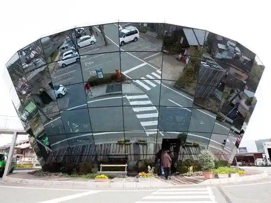
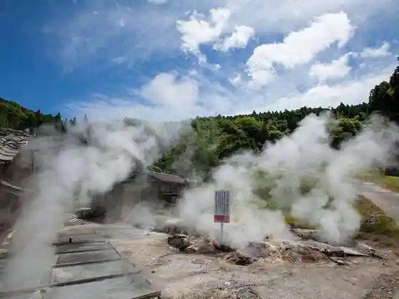
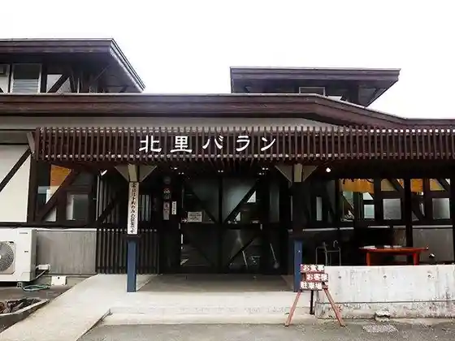

Roadside Station Oguni Yu Suteshon
Oguni, Kumamoto · 0967-46-4111 · Official / source link

Tsuetate Onsen
Oguni, Kumamoto · 0967-48-0206 · Official / source link
Hage no Yu Onsen
Oguni, Kumamoto · 0967-46-5750 · Official / source link

Gohan Tokoro Kitazato Baran
Oguni, Kumamoto · 0967-46-5560 · Official / source link

Yukemuri Chaya
Oguni, Kumamoto · 0967-46-5750 · Official / source link
Kunugi Yu
Oguni, Kumamoto · 0967-46-3222 · Official / source link
Waita Onsen Sato
Oguni, Kumamoto · 0967-46-5750 · Official / source link
O Yado Marusho
Oguni, Kumamoto · 0967-48-0052 · Official / source link
Komeya Besso
Oguni, Kumamoto · 0967-48-0507 · Official / source link
Kukita Bekkan
Oguni, Kumamoto · 0967-48-0010 · Official / source link
Shiki no Yado
Oguni, Kumamoto · 0967-48-0031 · Official / source link
Oguni Tennen Shoku Hokosugi Aruku Kafe
Oguni, Kumamoto · 0967-46-3715 · Official / source link
Kurobuta Ya
Oguni, Kumamoto · 0967-46-5572 · Official / source link
Yakumi Yasai Village Oguni
Oguni, Kumamoto · 0967-46-5777 · Official / source link
Okamoto Tofu Mise
Oguni, Kumamoto · 0967-46-3762 · Official / source link
O Yado Gen Kawa (Kurokawa) Shokuji Kissa Ufufu
Oguni, Kumamoto · 0967-44-0651 · Official / source link
Yasuragi no Yado Matsuya
Oguni, Kumamoto · 0967-46-5675 · Official / source link
Inaka no Yado
Oguni, Kumamoto · 0967-46-3762 · Official / source link
Aso Tsuri Onsen Kameyama Baths
Oguni, Kumamoto · 0967-46-5918 · Official / source link
Seiryo So
Oguni, Kumamoto · 0967-46-4537 · Official / source link
Gaku Baths Jigokudani Onsen Hiroshi Hana
Oguni, Kumamoto · 0967-46-4935 · Official / source link
Amida Sugi
Oguni, Kumamoto · 0967-46-2111 · Official / source link
Shimojo no Dai Icho
Oguni, Kumamoto · 0967-46-2113 · Official / source link
Keyaki Suigen
Oguni, Kumamoto · 0967-46-2111 · Official / source link
Oguni Ryo Shrine
Oguni, Kumamoto · 0967-32-8535 · Official / source link
Kitazato Shibasaburo Memorial Museum
Oguni, Kumamoto · 0967-46-5466 · Official / source link
Kunugi no Mori Art Museum
Oguni, Kumamoto · 0967-46-5682 · Official / source link
Sakamoto Zenzo Art Museum
Oguni, Kumamoto · 0967-46-5732 · Official / source link
Manabi Village Kodama Kan
Oguni, Kumamoto · 0967-46-5560 · Official / source link
Oguni Domu
Oguni, Kumamoto · 0967-46-3317 · Official / source link
Nabegataki (Nabegataki) Park
Oguni, Kumamoto · 0967-46-4440 · Official / source link
Yu Futa Yama (Waitasan)
Oguni, Kumamoto · 0967-46-2111 · Official / source link
Shimojo Taki
Oguni, Kumamoto · 0967-46-2111 · Official / source link
Kagamigaike
Oguni, Kumamoto · 0967-46-2111 · Official / source link
Soba Kaido
Oguni, Kumamoto · 0967-42-1444 · Official / source link
Tsuetate Purin
Oguni, Kumamoto · 0967-48-0206 · Official / source link
Wagaku Village Take no Kura
Oguni, Kumamoto · 0967-46-4554 · Official / source link
Shirahana Shinfonii
Oguni, Kumamoto · 0967-46-3497 · Official / source link
Yamakawa Onsen Hana Yuzu
Oguni, Kumamoto · 0967-46-6688 · Official / source link
Yutaka Rei Baths
Oguni, Kumamoto · 0967-46-5525 · Official / source link
Yusui Kyo
Oguni, Kumamoto · 090-3883-0963 · Official / source link
P Horu
Oguni, Kumamoto · 0967-48-0484 · Official / source link
Shugo Jin Onsen
Oguni, Kumamoto · 0967-46-5430 · Official / source link
Teuchi Soba Yu Kokoro
Oguni, Kumamoto · 0967-46-2839 · Official / source link
Saka Bo Ringo no Ki
Oguni, Kumamoto · 0967-42-0785 · Official / source link
no Fuku Renkei Resutoran Tenku no Mamebatake
Oguni, Kumamoto · 0967-32-8035 · Official / source link
Yatsu Tomeyu Onsen (Nuruyuonsen) Kyodo Bath
Oguni, Kumamoto · Official / source link
Aso Reimbobare (Niji no Tani Campground)
Oguni, Kumamoto · 090-2717-2216 · Official / source link